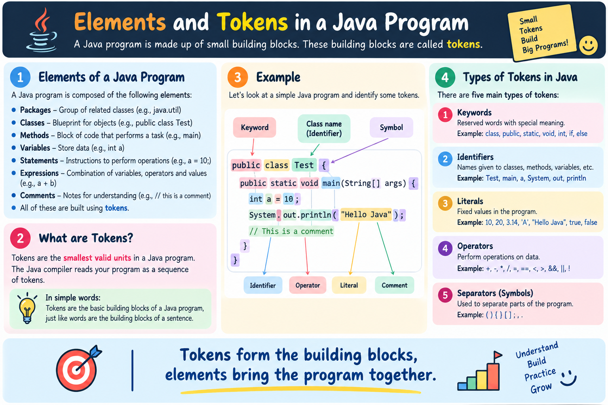

Discover why Java remains one of the world's most popular, secure, and versatile programming languages after 30 years — powering billions of devices, enterprise backends, and cloud microservices.
Java is a high-level, class-based, object-oriented programming language designed to have as few implementation dependencies as possible.
Originally created by James Gosling and his team (known as the Green Team) at Sun Microsystems in 1995 (later acquired by Oracle Corporation), Java was built with a revolutionary goal: Write Once, Run Anywhere (WORA).
Unlike traditional languages like C and C++ which compile directly into platform-specific machine code, Java compiles into Bytecode, which executes inside a virtual runtime environment called the JVM (Java Virtual Machine).
Click through the 4 steps below to visualize how Java source code is transformed from human-readable text into executed hardware instructions on any operating system:
Java's popularity isn't accidental. It combines safety, performance, and developer productivity like no other enterprise language. Explore Java's key features:
In C or C++, code compiled on Windows produces a .exe file that cannot run on Linux or macOS. Java solves this by compiling into portable Bytecode.
.jar file to Linux cloud servers without re-compiling.
Java eliminates explicit memory pointers. Applications execute inside the JVM sandbox, preventing buffer overflows, memory corruption, and unauthorized file access.
In languages like C++, developers must manually deallocate memory using free() or delete. Forgetting leads to memory leaks; deleting twice leads to crashes. Java's Garbage Collector (GC) automatically reclaims unused heap memory in the background.
Java was designed from day one with native multithreading support. Modern Java 21 introduces Virtual Threads (Project Loom), allowing millions of concurrent lightweight threads on a single machine.
While initial execution is interpreted, Java's JIT Compiler identifies frequently executed "hot spots" in bytecode and compiles them directly into native CPU machine code at runtime.
Java possesses the richest ecosystem of battle-tested open-source frameworks (Spring Boot, Hibernate, Apache Kafka, JUnit, Maven, Gradle) backed by active global communities and Oracle LTS (Long Term Support).
Every Java program is constructed from basic building blocks called Tokens (Keywords, Identifiers, Literals, Operators, and Separators). Click on any keyword in the interactive code box below to see its explanation:
public, class, static, main, or System.out.println in the code box to explore their function in Java!

Java is the foundation of modern technology stacks across major industries:
Used by JPMorgan Chase, Citigroup, and Goldman Sachs for core transactional backends, high-frequency trading platforms, and risk management systems.
Netflix, Uber, Spotify, and Amazon build resilient distributed cloud services using Spring Boot and Java microservice frameworks.
Java is the native foundational language for the Android operating system and billions of mobile application backends.
Apache Hadoop, Apache Spark, Apache Kafka, and Elasticsearch are built natively in Java and Scala on top of the JVM.